<title>OIL Award Editor</title>
<meta name="claude:viewport-fit-sides" content="cover">
<style>
/* Questions on top, then today beside two steady layouts, three states each, phone then desktop. Dark like the app. */
:root{--bg:#0d1117;--panel:#161b22;--edge:#2a313b;--ink:#e8edf2;--ink2:#9aa6b2;--cyan:#3BC6E8;--green:#46c46c;color-scheme:dark;
--sans:"Inter",system-ui,-apple-system,"Segoe UI",sans-serif}
body{background:var(--bg);color:var(--ink);font-family:var(--sans);font-size:16px;line-height:1.5;
padding-left:max(16px,env(safe-area-inset-left,0px));padding-right:max(16px,env(safe-area-inset-right,0px));padding-block:20px 48px}
main{max-width:1100px;margin:0 auto;display:grid;gap:28px}
h1{font-size:22px;margin:0}
h2{font-size:18px;margin:0}
h3{font-size:15px;margin:0;color:var(--ink2);font-weight:600}
p{margin:0;max-width:70ch}
.ask{background:var(--panel);border:1px solid var(--cyan);border-radius:10px;padding:16px;display:grid;gap:10px}
.rec{color:var(--cyan);font-weight:600}
.dev{display:grid;gap:14px}
.cols{display:grid;grid-template-columns:repeat(3,minmax(0,1fr));gap:16px}
@media(max-width:760px){.cols{grid-template-columns:1fr}}
.col{display:grid;gap:10px;align-content:start;padding:12px;border:1px solid var(--edge);border-radius:10px}
.col.pick{border-color:var(--green)}
.st{display:grid;gap:4px}
.st span{font-size:13px;color:var(--ink2)}
.st img{display:block;width:100%;height:auto;border-radius:6px;border:1px solid var(--edge)}
a{color:var(--cyan)}
</style>
<main>
  <h1>OIL award editor — nothing jumps</h1>

  <section class="ask">
    <h2>Question 1 · Which steady layout? (D2150)</h2>
    <p><b>Today</b> AM and PM only appear when the amount is 0.5. Type 1 and they vanish, so the date, the reason and "given by" slide up and over. "Delete" also gets wider when it turns into "Really delete?".</p>
    <p><b>Option 1</b> One fixed layout: amount, AM, PM, date on the first line; reason and "given by" side by side on the second; Save, Cancel, Delete on the third. AM and PM always stay, <b>greyed and not pressable</b> when the amount isn't a half day. Delete is always as wide as "Really delete?".</p>
    <p><b>Option 2</b> The same layout, but when the amount isn't a half day the AM / PM place is left <b>empty</b> instead of greyed.</p>
    <p class="rec">My recommendation: Option 1. Nothing moves, and you can see AM / PM is there for a half day, the same way a greyed Approve stays in the bid window instead of vanishing. Option 2 leaves an odd gap. Reply "1" or "2", or what you'd change.</p>
  </section>

  <section class="dev">
    <h2>On your iPhone</h2>
    <div class="cols">
      <div class="col"><h3>Today (real app)</h3>
        <div class="st"><span>Amount 0.5</span><a href="img/phone-today-half.png">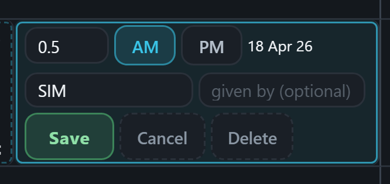</a></div>
        <div class="st"><span>Amount 1 — things jump</span><a href="img/phone-today-one.png">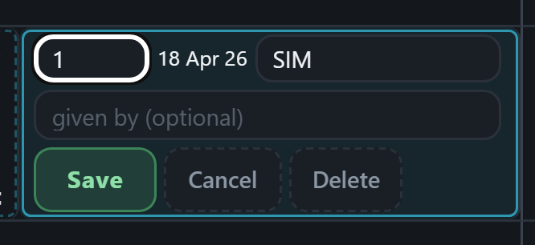</a></div>
        <div class="st"><span>Delete pressed once</span><a href="img/phone-today-one-armed.png">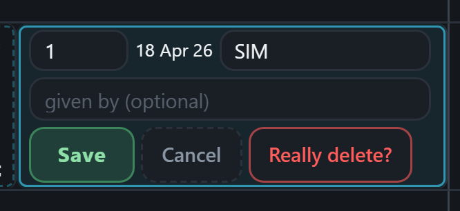</a></div>
      </div>
      <div class="col pick"><h3>Option 1 · greyed AM / PM (recommended)</h3>
        <div class="st"><span>Amount 0.5</span><a href="img/phone-o1-half.png"></a></div>
        <div class="st"><span>Amount 1 — nothing moves</span><a href="img/phone-o1-one.png">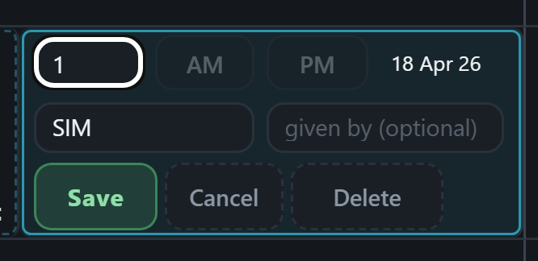</a></div>
        <div class="st"><span>Delete pressed once</span><a href="img/phone-o1-one-armed.png">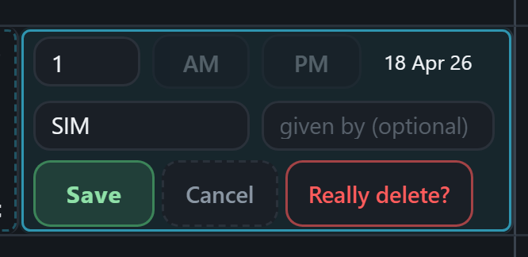</a></div>
      </div>
      <div class="col"><h3>Option 2 · empty place</h3>
        <div class="st"><span>Amount 0.5</span><a href="img/phone-o2-half.png">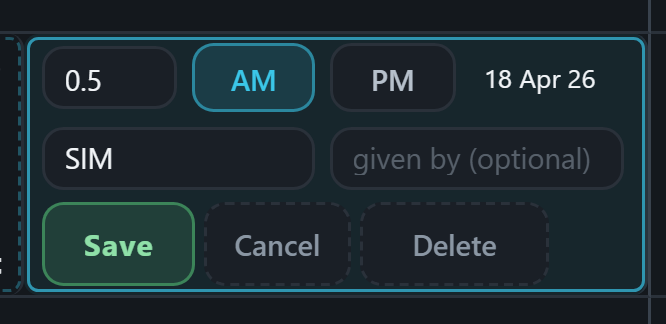</a></div>
        <div class="st"><span>Amount 1</span><a href="img/phone-o2-one.png">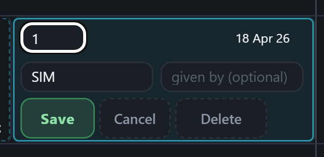</a></div>
        <div class="st"><span>Delete pressed once</span><a href="img/phone-o2-one-armed.png">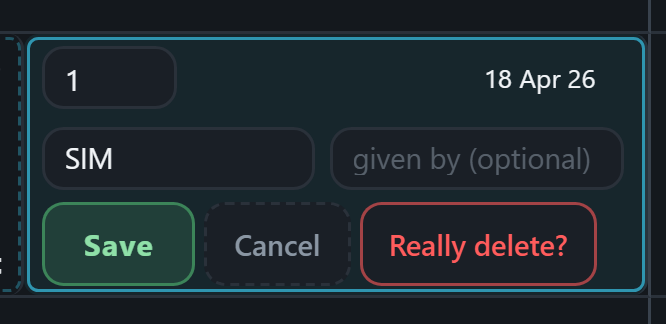</a></div>
      </div>
    </div>
  </section>

  <section class="dev">
    <h2>On your PC</h2>
    <div class="cols">
      <div class="col"><h3>Today (real app)</h3>
        <div class="st"><span>Amount 0.5</span><a href="img/desk-today-half.png">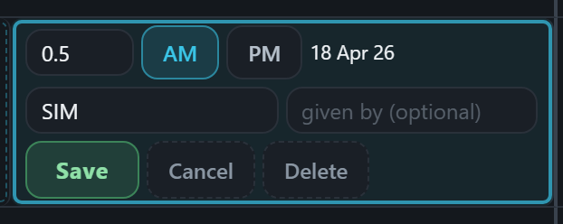</a></div>
        <div class="st"><span>Amount 1</span><a href="img/desk-today-one.png">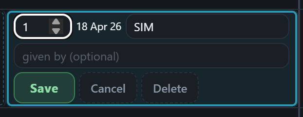</a></div>
        <div class="st"><span>Delete pressed once</span><a href="img/desk-today-one-armed.png">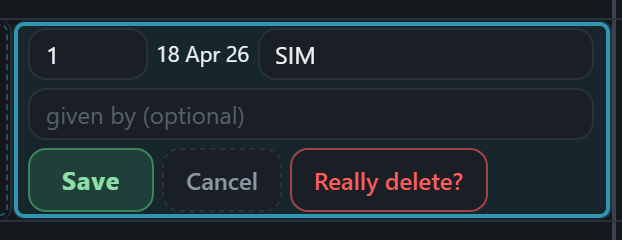</a></div>
      </div>
      <div class="col pick"><h3>Option 1 (recommended)</h3>
        <div class="st"><span>Amount 0.5</span><a href="img/desk-o1-half.png"></a></div>
        <div class="st"><span>Amount 1</span><a href="img/desk-o1-one.png">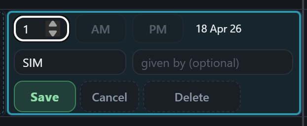</a></div>
        <div class="st"><span>Delete pressed once</span><a href="img/desk-o1-one-armed.png">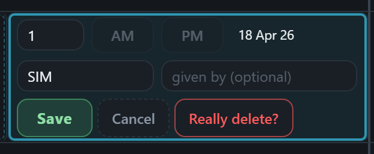</a></div>
      </div>
      <div class="col"><h3>Option 2</h3>
        <div class="st"><span>Amount 0.5</span><a href="img/desk-o2-half.png">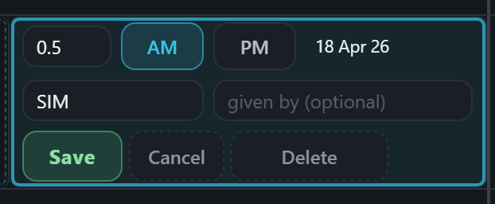</a></div>
        <div class="st"><span>Amount 1</span><a href="img/desk-o2-one.png">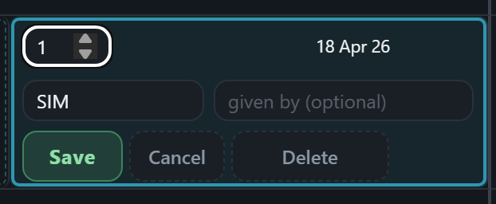</a></div>
        <div class="st"><span>Delete pressed once</span><a href="img/desk-o2-one-armed.png">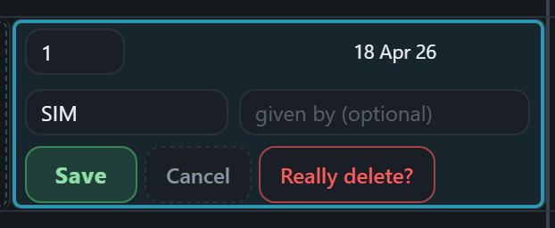</a></div>
      </div>
    </div>
    <p style="color:var(--ink2);font-size:14px">Today's pictures are the real app. The options are the real editor with its parts rearranged on the page; the greyed AM / PM are copies of the real buttons. Tap a picture to open it full size.</p>
  </section>
</main>
